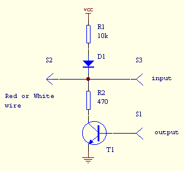
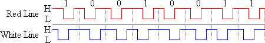
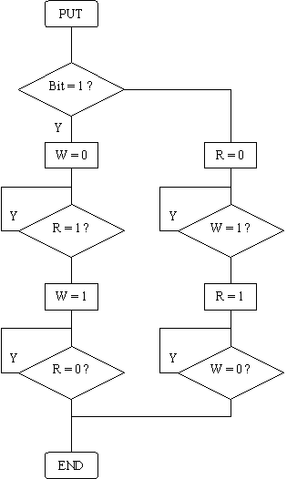
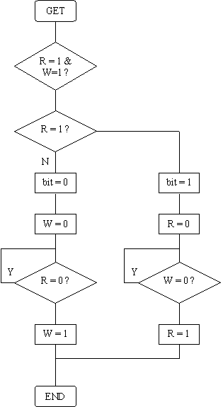

TI Link Protocol Guide - Hardware Link Protocol
The TI transfer bus is a two-wire half-duplex serial interface consisting of a 'red' line (wrapped in red insulation)
and a 'white' line (wrapped in white insulation) with a common ground.
Both lines are bi-directional, so outputs must be of an open-drain or an open-collector type (such as i²C
bus for instance).
Each line is connected to the supply voltage via a pull-up resistor. A line is then logic high when both of the
calculators hold the line high, and logic low if one or more of the devices drives the line low.

In this way the calculator or any external device can put the line to logical high and monitor the corresponding
input to see whether the line actually becomes high. This open-collector structure allows the calculator to drive
an I²C device directly.
Each bit is made of two voltage changes on each two different wires. The order of the first two voltage impulses determines whether the bit is high (1) or low (0). A logical '0' is represented by changing the red wire first, wheras a logical '1' is represented by changing the white wire first. A sequence of eight bit transfers constitutes one byte, least significant bit sent first. The protocol does not allow for a distinction of byte boundaries.
The graphing calculator models up to the TI-92 (those with a 6MHz Z80 processor) can transfer data at roughly 16 to 18 kilobits per second, whereas the TI-89, TI-92 and TI-92+ (those with the 10-MHz processor) can transfer data at roughly 45 to 50 kilobits per second.
An example of a byte transfer: The byte represented in the figure is 0xC9 (11001001 in binary).
The first bit transmitted is the least significant bit (LSb) and the last one is the most significant bit
(MSb) as a serial stream.
Remember that a high status represents a closed circuit and that either one of the calculators can pull it low.
On the other hand, a low status represents a break in the circuit, and both calculators must close the circuit
in order to bring the line high again.
This figure shows the electrical status of the data lines during a byte transfer:

Flow charts of 'put' and 'get' routines:
|
 |
 |
You will find below 2 examples of routines: one for sending, the other for receiving a byte with a parallel link cable. Link cables are described in the next section.
/*
Send a byte to the calculator
*/
int put92(char data)
{
int bit;
for(bit=0; bit<8; bit++)
{
if(data & 1)
{
outportb(lpt_out,
2);
while((inportb(lpt_in)
& 0x10) == 1);
outportb(lpt_out,
3);
while((inportb(lpt_in)
& 0x10) == 0);
}
else
{
outportb(lpt_out,
1);
while((inportb(lpt_in)
& 0x20) == 1);
outportb(lpt_out,
3);
while((inportb(lpt_in)
& 0x20) == 0);
}
data >>= 1;
}
}
/*
Reads a byte from the calculator
*/
unsigned char get92(void)
{
int bit;
unsigned char v, data=0;
for(bit=0; bit<8; bit++)
{
while((v = inportb(lpt_in) &
0x30) == 0x30);
if(v & 1)
{
data
= (data >> 1) | 0x80;
outportb(lpt_out,
1);
while((inportb(lpt_in)
& 0x20) == 0x00);
outportb(lpt_out,
3);
}
else
{
data
= data >> 1;
outportb(lpt_out,
2);
while((inportb(lpt_in)
& 0x10) == 0x00);
outportb(lpt_out,
3);
}
}
}
If you want use a link cable for your own project, you should know that a complete and multi-platform library exists for handling the different link cables (hardware & virtual) thru a common API. The libticables library (source and .dll/.so) can be found either on ticalc.org (unix directory of the ticalc's archives) or on the TiLP (formermy GtkTiLink) homepage.
You will find here, as a separate documentation, various documents on the parallel and serial port structure: